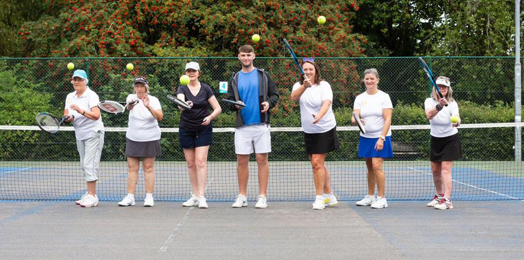
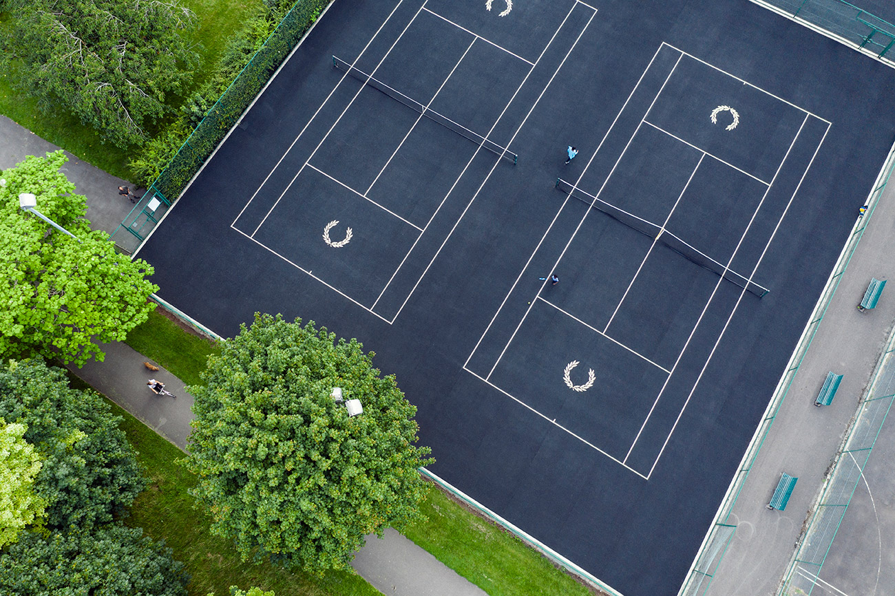

About Manchester Tennis Community
Welcome to the heart of tennis in Manchester!
At Manchester Tennis Community, we are more than just a club; we are a passionate community of tennis enthusiasts who come together to share our love for the sport. Whether you're a seasoned player or picking up a racket for the first time, we have a place for you.
Our Mission
Our mission is to promote the sport of tennis in Manchester, fostering a sense of community, and providing opportunities for players of all ages and skill levels to enjoy the game. We believe in the power of tennis to bring people together, promote an active lifestyle, and create lasting friendships.
What We Offer
- Courts: We offer a variety of well-maintained courts across Manchester, providing you with the perfect environment to hone your skills and enjoy friendly matches.
- Coaching: Our team of experienced coaches is here to help you improve your game, whether you're a beginner looking to learn the basics or an advanced player aiming to fine-tune your skills.
- Events: We organize regular tournaments, social gatherings, and fun events to bring our community together and provide opportunities for friendly competition.
- Youth Programs: We are committed to nurturing the next generation of tennis players through our youth programs, ensuring that the love for tennis continues to thrive in Manchester.
Get Involved
Becoming a part of our tennis community is easy. Join us for a game, participate in one of our events, or simply come and watch some exciting matches. Whether you're an avid player, a casual observer, or anything in between, you are always welcome here.
Connect With Us
We love to connect with our community. Follow us on social media, subscribe to our newsletter, or drop by our clubhouse to say hello. We look forward to meeting you on the courts and growing the love for tennis together.
Join us at Manchester Tennis Community, where tennis is more than just a sport; it's a way of life.